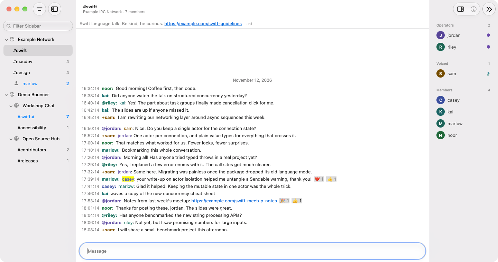
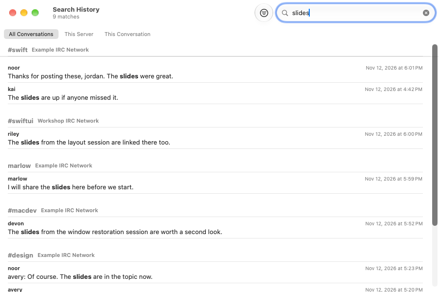
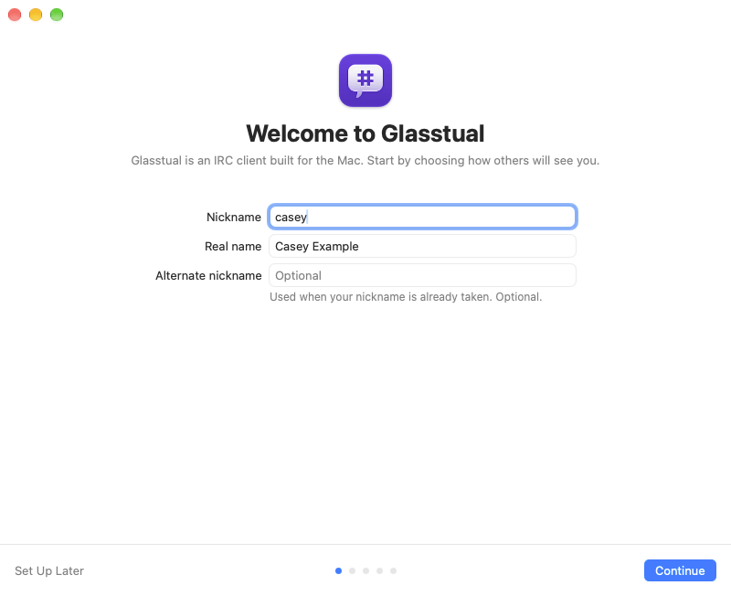
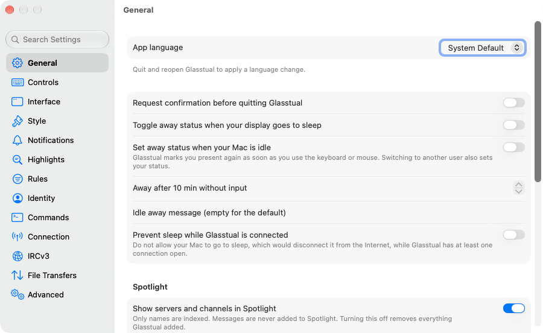
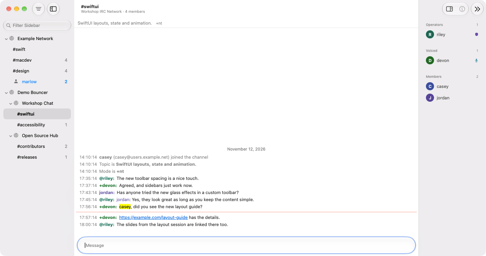
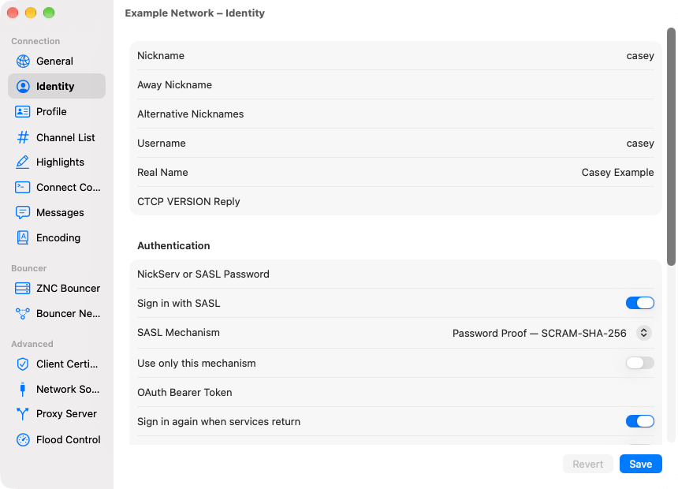
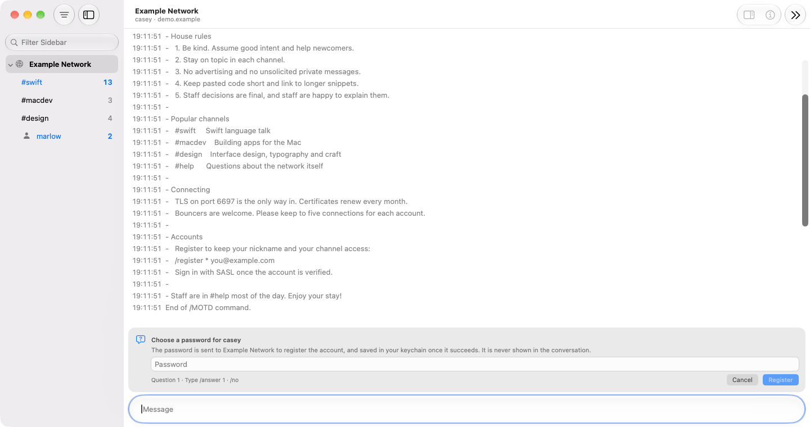
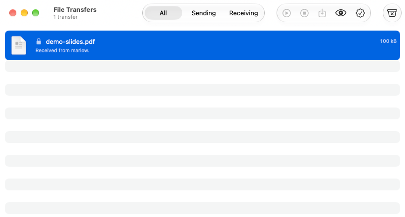
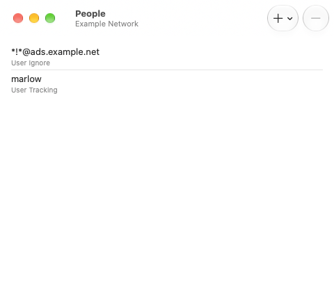

Glasstual for macOS
IRC, made for the Mac.
A native IRC client for macOS 26 with a system sidebar, Liquid Glass and modern IRCv3.
Signed and notarized. Free and open source.

Features
Everything IRC, the way a Mac app should do it.
-
History and Search
On servers that keep history, Glasstual loads recent messages when you join, fills gaps after a reconnect and loads earlier messages as you scroll up. Search every stored conversation with Shift-Command-F, filter by server, conversation, nickname or date, and jump to the message in context.
-
Sign In Your Way
SASL sign-in with a password (PLAIN), a password proof (SCRAM-SHA-256 or SCRAM-SHA-512), a client certificate (EXTERNAL), an ECDSA signing key (ECDSA-NIST256P-CHALLENGE) or an OAuth token (OAUTHBEARER). Passwords, keys and tokens are stored in the macOS Keychain.
-
Account Registration
On networks that support it, register an account from the app and enter the verification code the network emails you. Glasstual then signs in with SASL.
-
IRC over WebSocket
Connect to networks that accept IRC over WebSocket, encrypted with TLS (
wss://) or not (ws://), with the gateway path set per server. -
Proxies and Tor
Give each server its own SOCKS5 or HTTP proxy, or connect through Tor with Tor Browser running. Images never go around a server’s proxy: with a SOCKS5 or HTTP proxy, each image loads only when you click it.
-
Secure DCC and XDCC
Send files and open direct chats, optionally encrypted with TLS. The first time you connect securely with someone you check their certificate fingerprint and choose whether to trust it, and Glasstual warns you if it later changes. Request packs from XDCC bots and see your place in the queue.
-
Profiles
On servers that support profile metadata, set a display name, a picture and a color, and see the ones other people have set.
-
Dialogs or In-Conversation Prompts
Choose whether questions open as dialogs or appear in the conversation, where you answer with a click or a command such as
/yes,/noor/answer. -
Modern IRCv3
Multiline messages, message deletion, channel renames, replies, reactions, typing notifications and read markers, negotiated with each server.
-
Bouncers
Connect to a soju bouncer once and see each of its networks nested under one account. ZNC playback options are built in.
-
Shortcuts and Spotlight
Send a message, join a channel, connect, disconnect or open a conversation from Shortcuts. Servers and channels can appear in Spotlight, and direct conversations if you opt in. Only names are indexed, on your Mac, and you can turn it off.
-
Focus Filters and Idle Away
Let a Focus filter mute notifications, set you away, or both, and set yourself away automatically when your Mac is idle.
-
Transcript Themes
The default theme follows your Mac’s appearance, accent color and Increase Contrast setting. Or choose a preset (Classic, GitHub, Tokyo Night, One Dark, Dracula, Nord or Solarized), or set each color yourself.
-
Server Properties and People
Each server’s properties open in a window of their own, so you can keep them open while you chat. The People window lists who you ignore and who you want to hear about when they come online.
-
Logs and Channel Lists
Browse saved transcript logs without leaving the app, and view or edit a channel’s bans, ban exceptions, invite exceptions and quiets.
-
Built-In Help
Glasstual Help, in the Help menu, covers setup, sign-in, secure connections, file transfers, commands, keyboard shortcuts and troubleshooting.
-
Native macOS 26 Interface
A system sidebar, a Liquid Glass input field, and light and dark appearances that follow your Mac. Pick a color and an icon for each server; a network that advertises its own icon shows it in the sidebar.
-
Made for Daily Use
Multiple servers, favorites, unread filters, mentions, notifications, slash-command suggestions, message rules and user scripts.
Transcript Styles
Lines or Bubbles.
Choose the compact IRC layout or a conversation view with bubbles. Both work with every transcript theme, in light and dark.
Gallery
A closer look.
-

Search All History Find any message and jump to it in context. -

Welcome A short first run sets up your nickname, look and first network. -

Settings Tune notifications, behavior, text and themes. -

Networks Bouncer networks nested under one account. -

Server Properties Each network keeps its own identity and way of signing in. -

Questions in the conversation Answer with a button, or type the command the question names. -

Secure file transfers Encrypted transfers from senders whose certificate you trust. -

People Ignore the noise and keep track of the people you care about.
Screenshots show a loopback-only demo network. No real accounts or messages appear.
Come back to IRC.
Glasstual runs on macOS 26 and later on Apple silicon.
Download Latest Release Signed and notarized